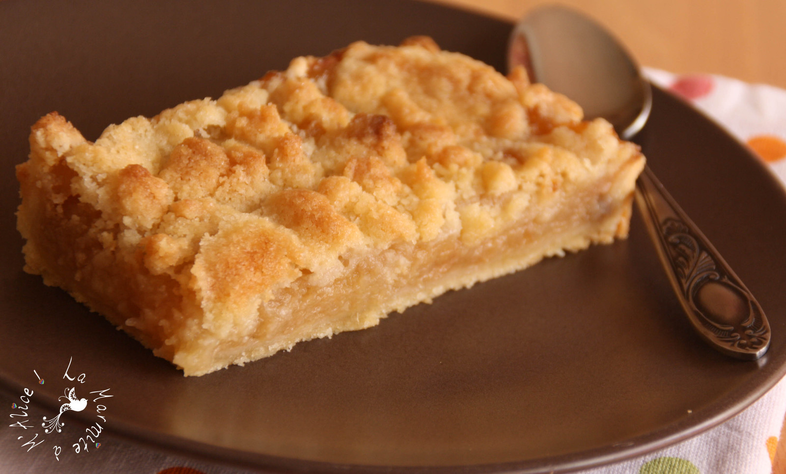

<ion-view view-title="Crumble aux pommes">

    <ion-content class="padding">


        <h1>Crumble aux pommes</h1>

        

        <p class="gras">Temps de préparation : 25 minutes</p>

        <p class="gras">Temps de cuisson : 30 minutes</p>

        <p class="gras">Ingrédients (pour 6 personnes) :</p>

        <ul>
            <li>- 6 belles pommes (des Canada par exemple)</li>
            <li>- 150 g de cassonade</li>
            <li>- 150 g de farine de blé</li>
            <li>- 125 g de beurre doux (le sortir 1/2 heure avant de commencer la recette)</li>
            <li>- 1 petite cuillère de cannelle en poudre</li>
            <li>- 1 sachet de sucre vanillé</li>
            <li>- le jus d'un citron</li>
        </ul>
        <br>
        <p class="gras">Préparation de la recette :</p>

        <p> Préchauffer le four à 210°C (thermostat 7).</p>

        <p> Peler, évider et découper les pommes en cubes grossiers, les répartir dans un plat allant au four, verser dessus le jus du citron, la cannelle et le sucre vanillé.</p>

        <p>Dans un saladier, mélanger la farine et la cassonade. Puis ajouter le beurre en petits cubes et mélanger à la main de façon à former une pâte grumeleuse.</p>

        <p>Émietter cette pâte au dessus des pommes de façon à les recouvrir.</p>

        <p>Enfourner pour 30 minutes de cuisson. </p>

        <p>Servir tiède avec de la crème fouettée ou de la glace à la vanille.</p>


    </ion-content>

</ion-view>